Some of the techniques and concepts in this book are more advanced, so some readers may want alternatives or additional background information. Over the next few pages, you will find alternative methods to challenging techniques, an in-depth explanation of relay circuits, instructions for adding a power switch to any bot, an electronics shopping list, and a list of reference materials. For even more information, visit http://www.randysarafan.com/.
Alternatives to Soldering
If soldering is not your thing, you can make electrical connections and circuits using other methods. The following is a brief overview of some techniques.
Alligator Clips
Alligator clip jumper cables (as seen in Chapter 2 on page 19) essentially are wires with alligator clips on both ends. They provide a quick and easy way to connect nearly anything together, as long as the electrical contact can fit in the clip’s mouth. Alligator clips are great for attaching wires, switches, and motor terminals together temporarily. Keep in mind that while these connections are convenient for prototyping, they aren’t the most durable of connections.
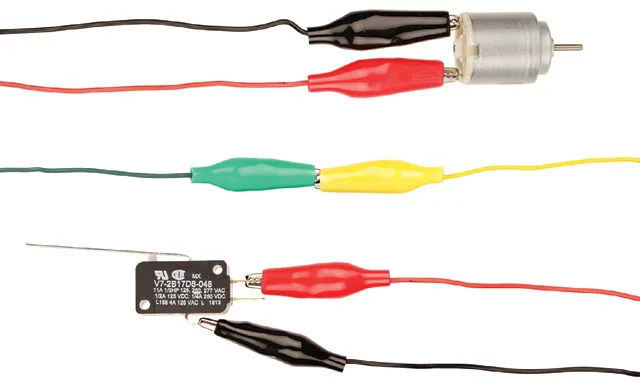
Crimp Connectors
Crimp connectors provide another easy way to join wires together without soldering. By crimping or clamping a connector onto the end of each wire, you can join two wires together. Sometimes crimp connectors simply slide together, and sometimes you need additional hardware, like a nut and bolt, to keep them together. The downsides to crimp connectors are that they’re a little bulky and the electrical connections are exposed and need to be insulated.
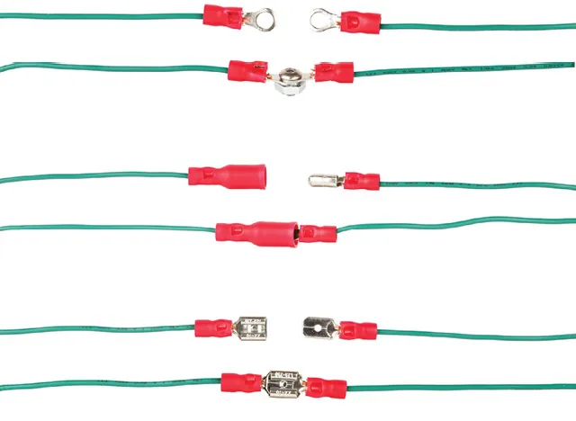
To crimp the connector onto the wire, strip about 1/2 inch of insulation off the end of the wire and slide the wire into the barrel of the connector. Then, compress the barrel to grab onto the wire. Place the connector on a sturdy, flat surface and bash the connector’s barrel with a hammer until it is flat.
Alternatively, many wire strippers have a crimping tool on the inner handle. If your wire stripper has this feature, line up the groove in the crimping tool that matches the size of your wire and then squeeze down firmly.
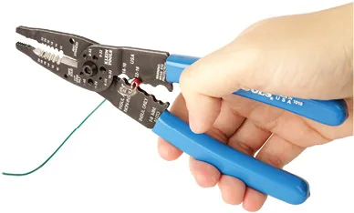
Levers, Springs, and Screws
Another quick and dirty way to connect wires together involves using a mechanical lever, spring connector, or screw terminal. They all work in a similar way. Start by lifting the lever, pressing down on the spring-loaded button, or unthreading the screw to open the connector. Next, insert the wire, and then press the lever, release the spring, or tighten the screw to hold the wire in place and make an electrical connection. This method is one of the fastest and easiest ways to connect wires together; however, these connectors are bulky, and with enough force, you can potentially pull the wires loose.
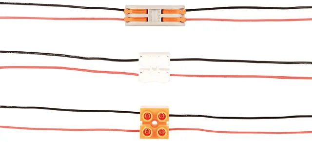
Barrel and Socket Connectors
Last but not least, you can use barrel and socket connectors with screw terminals to make power connections. If you want to connect batteries to one or more parallel motors, simply attach one connector to a battery pack and the other to a motor by inserting the wires into the connector’s screw terminals. Finally, insert the barrel plug into the barrel socket, and you’re in business.
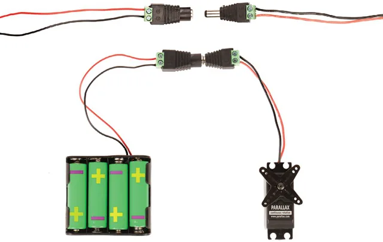
Alternatives to Servo Motors
Controllerless servo motors are the best solution for building the bots in this book, but some other approaches could provide similar results.
All of these alternative methods basically consist of three elements: a geared motor, a motor mounting bracket, and some sort of wheel or disc that attaches to the motor shaft.
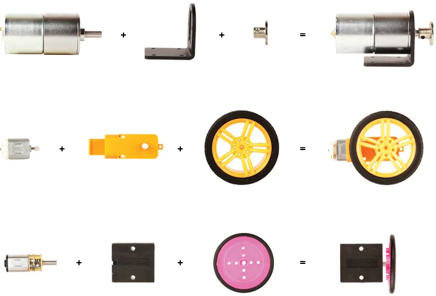
This list is by no means comprehensive, so feel free to experiment and find other solutions. If you stick to this formula, you can’t go wrong.
Relay Circuits
When using a relay, I recommend choosing a relay socket. Relay sockets have screw terminals that make it easy to connect and disconnect wires, although you can always attach wires directly to the relay pins.
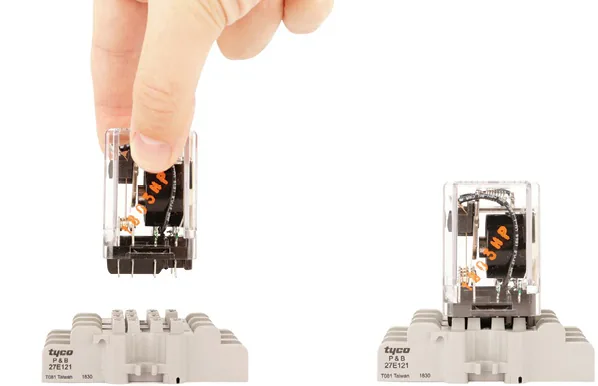
To insert a wire, simply loosen the screw, stick the uninsulated part of the wire under the screw (or screw plate), and then tighten it.
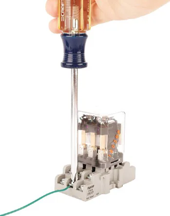
You can also easily add multiple wires to a single terminal.
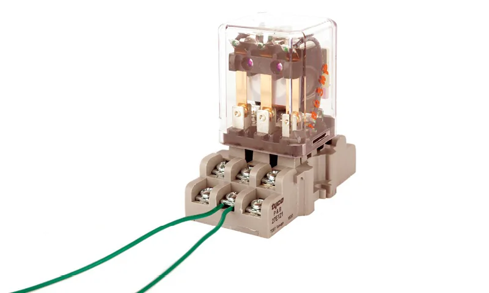
DPDT Relay Circuits
A DPDT relay works the same as a DPDT switch. In the preceding example, the terminals are wired in an H-bridge configuration (see page 30 in Chapter 3). The lever switch makes or breaks the power connection to the electromagnetic coil. If the coil is powered, the motor drives backward. If the coil is unpowered, the motor drives forward.
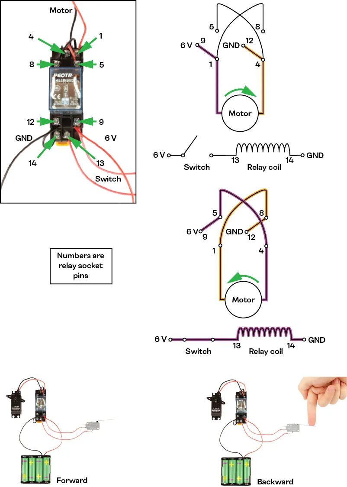
3PDT Relay Circuits
You also can wire a 3PDT relay in an H-bridge configuration like a DPDT relay, but a 3PDT relay will have an unused set of SPDT relay terminal connections left over at the end. You can use that leftover set of terminals to control something else when the relay is activated.
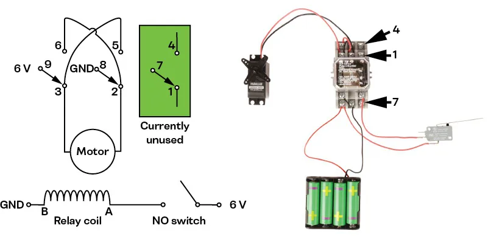
You can make a circuit that changes the motor direction (and stays changed) depending on which switch is pressed. All you need is this extra set of terminals and an additional SPDT lever switch. Flip Flop Bot from Chapter 14 uses this circuit.
This circuit consists of two switches that each power the coil using separate electrical paths. One path passes through the first switch wired to be normally open (NO). To do this, connect a wire to its NO connection as well as to its common C connection and the relay coil. The second path passes through two of the relay terminals not being used for the H-bridge. To do this, wire a switch to be normally closed (NC) by connecting a wire to its NC connection as well as to its common C connection and the relay coil.
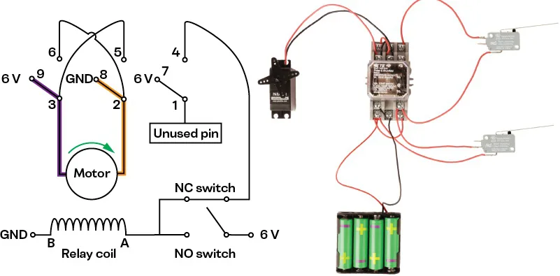
When the first switch is pressed, the circuit completes. Power can now flow through the coil, and it becomes energized. This toggles the relay that reverses the motor direction using the H-bridge wiring. It also completes the second switch circuit that powers the coil.
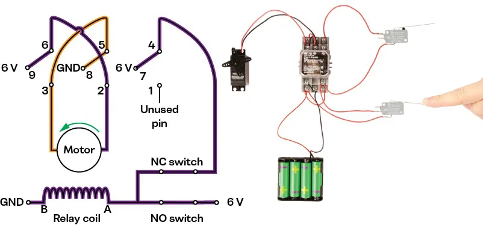
When the NO switch is released, power stops flowing through it to the coil. However, power continues to flow through the other normally closed switch to the coil. As long as this switch remains closed, the coil will remain powered and the motor will continue spinning in reverse. If you want the motor to spin forward again, the only way is to break the electrical connection to the circuit by pressing the NC switch.
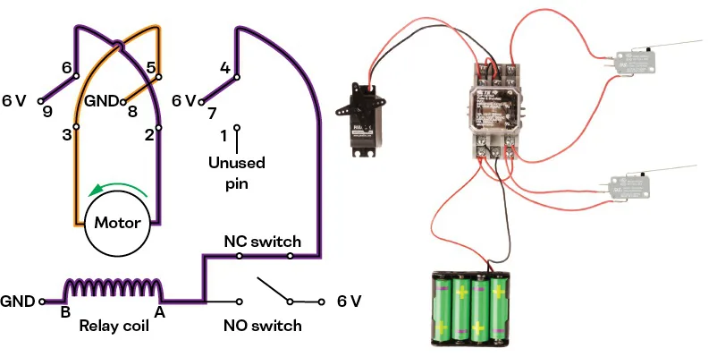
When the NC switch is pressed, the switch opens and breaks the circuit connection to the relay coil, which toggles the relay terminals, causing the motor to spin forward once again. This also breaks the power connection inside the relay to the normally closed switch, preventing it from powering the coil. From here, the process can start over again.
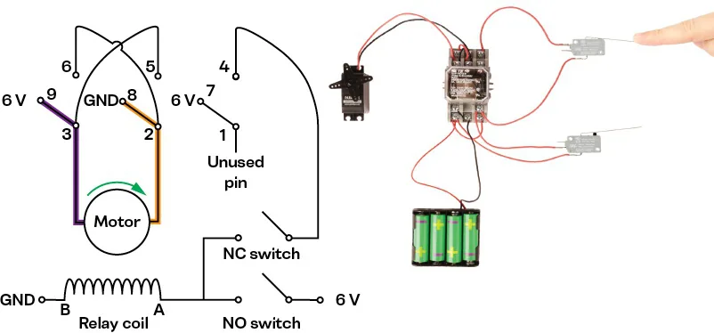
Adding a Power Switch
The bots in this book do not have power switches. However, adding a power switch to any bot is simple. Just gather an SPST toggle switch and follow these easy steps:
Step 1. Cut in half the red power wire connected to the battery pack.
Step 2. Solder each of the ends of wire to a terminal on an SPST switch.
Step 3. Drill a ¼-inch hole in the bot’s enclosure in a spot where there is room to mount the switch.
Step 4. Insert the switch through the hole in the enclosure and fasten it in place with its mounting hardware.
Enjoy your new power switch!
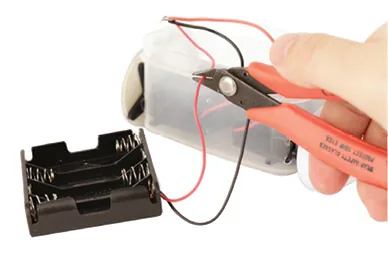
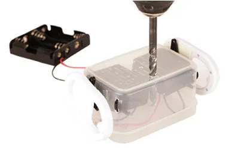
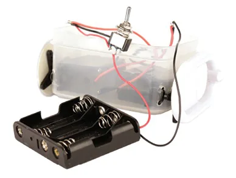
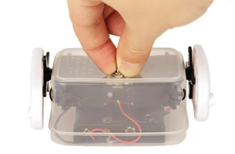
Basic Electronics Shopping List
The following table lists the bare minimum parts needed to complete any project in this book, broken down according to chapter, including different electronics suppliers and part numbers.
| Quantity | Part | Amazon | Digikey | Mouser | Chapter(s) | Notes |
|---|---|---|---|---|---|---|
| 2 | Continuous servos | B01HSX1IDE | 900-00008-ND | 619-900-00008 | 5, 6, 7, 8, 9, 10, 11, 12, 13, 14 | Used in all projects |
| 1 | 4 × AA battery pack | B07F43VWRQ | 36-2478-ND | 534-2478 | 5, 6, 8, 11, 12, 13, 14 | |
| 1 | 3 × AA battery pack | B008HJ02F4 | 36-2480-ND | 546-BH3AAW | 7, 9, 10 | |
| 1 | DPDT switch | B07QGBW6XZ | EG2398-ND | 612-100-F1111 | 10, 11, 12 | |
| 1 | SPST switch | B07QGDDTWJ | 360-2827-ND | 633-M201101 | Appendix A | Optional power switch for all projects |
| 2 | Magnet reed SPDT switch | B0010F0086 | — | 507-AMS-505-392W | 9 | |
| 1 | Tilt switch | B07S9KQYNV | CKN10375-ND | 611-RB-231X2 | 8 | |
| 4 | Lever switch | B07YQPSK3B | 480-5932-ND | 785-V15T16-EZ100A03 | 13, 14 | |
| 1 | 22 AWG red stranded core wire | B07JNRJW37 | 422010RD005-ND | 602-422010-100-03 | 5, 6, 7, 8, 9, 10, 11, 12, 13, 14 | Used in all projects |
| 1 | 22 AWG black stranded core wire | B07JNRJW37 | 422010BK005-ND | 602-422010-100-02 | 5, 6, 7, 8, 9, 10, 11, 12, 13, 14 | Used in all projects |
| 1 | 3PDT relay – 6 V coil | B084KYCXQ8 | KUP-14D15-6 | 655-KUP-14D15-6 | 14 | |
| 1 | 3PDT relay socket | B07J66JGZ3 | PB165-ND | 655-27E121 | 14 | |
| 1 | DPDT relay – 6 V coil | B07SYHCPQX | PB2272-ND | 655-KUP-11A15-6 | 13 | |
| 1 | DPDT relay socket | B07SYHCPQX | PB166-ND | 655-27E893 | 13 |
Additional Resources
instructables.com You can find thousands of user-submitted robotics and electronics projects on this website. It also provides resources for learning other skills, such as fabrication and 3D printing.
Electronics for Kids by Øyvind Nydal Dahl A great book for diving deeper into electronic components and circuitry, with a series of fun hands-on projects.
Getting Started with Arduino by Massimo Banzi and Michael Shiloh A crash course on the basics of the Arduino microcontroller system from the inventor of the Arduino and another maker legend.
Arduino Project Handbook by Mark Geddes Another Arduino crash course with 25 hands-on projects that teach a wide array of Arduino skills (such as arrays).
Physical Computing by Dan O’Sullivan and Tom Igoe An advanced introduction to all things related to electronics. It reads more like a textbook than an activity book, but it’s a good place to start to learn to build more advanced circuits.
Making Things Move by Dustyn Roberts Like Physical Computing, this book is more textbook than activity book, but it’s approachable enough to give you a crash course on mechatronics.
Make: magazine A magazine at the forefront of the maker movement. It often has great articles about robots in addition to many other interesting topics.
HackSpace magazine Another great resource for staying current on DIY robotics and electronics.
hackerspaces.org On this website, you can find local hackerspaces and meet other people interested in robotics.
makerfaire.com Maker Faires are local and regional yearly events where makers come together and share their projects.